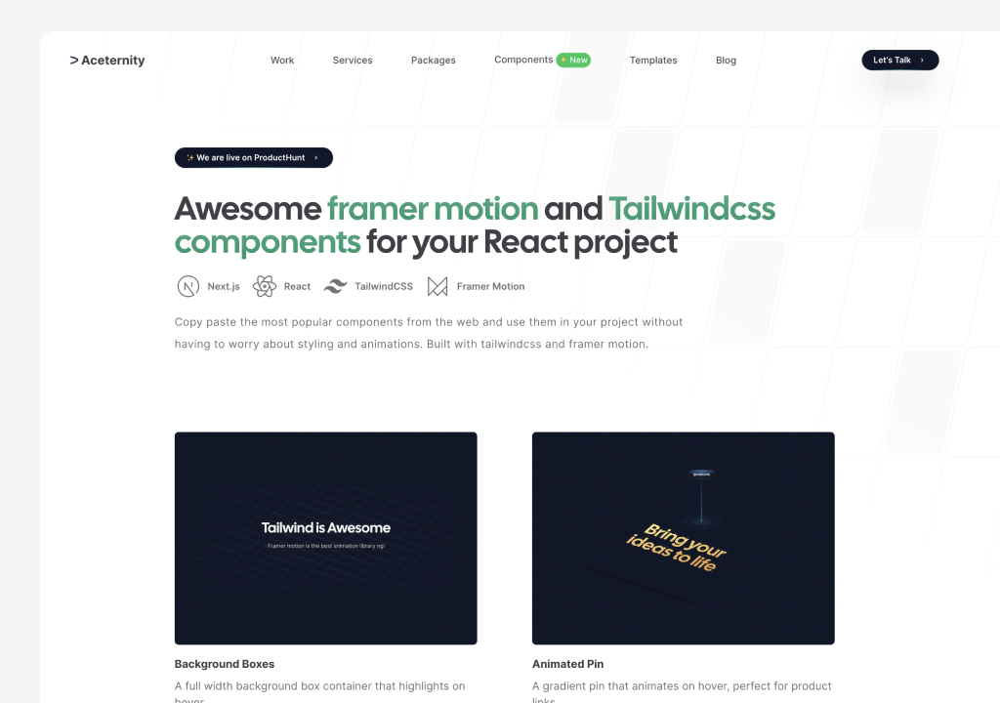
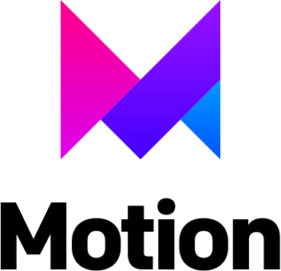

👋


Olá! Eu sou Julian Carreiro
Sou desenvolvedor(a) e gosto de criar produtos e aplicações web.
Tenho experiência com Backend, Software embarcado
O que eu tenho feito

Projeto 1 (edite aqui)
Descreva seu projeto em 1-2 frases.
Next.js
Tailwind
Projeto 2 (edite aqui)
Descreva seu projeto em 1-2 frases.
Node
Postgres
Tech Stack
